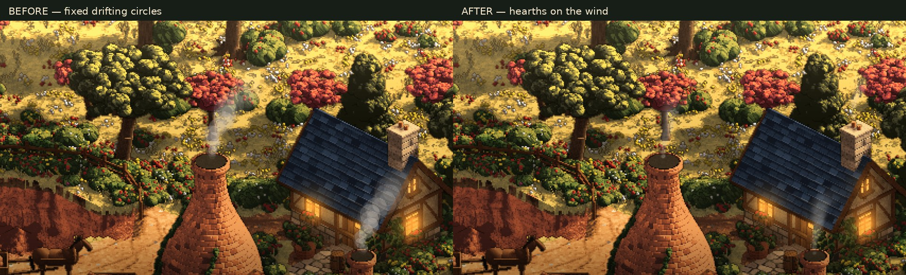

Hearths on the wind
23 October 2026 · Day 32
The next detail above Sprawl’s lanes: chimney smoke that starts at the actual pots, curls into a shared breeze and fades over the roofs. The feature is ready for visual review, with native captures and a measured rendering check.

A town with something happening above it
The traveller’s lantern gives a walk through town a little warmth. The rain work asks what happens when the sky changes. The next choice was to look up: a village should have signs of life above its roofs as well as people in its streets.
The moment we are building is quiet. A thin stream of smoke climbs out of a cottage chimney. A heavier plume rises from a kiln. Both meet the same breeze, then loosen into their own curls. A nearer roof hides the part that passes behind it. By night, the smoke settles into the darker scene instead of keeping its daylight brightness.
Starting at the right place
The old kiln smoke was a sequence of overlapping circles moving to the right. Ordinary house chimneys had no smoke at all. The movement suggested activity, but the repeating discs and fixed drift made the effect feel detached from the town.
The first improvement was less visible than the smoke itself: finding the actual openings. Chimneys are assembled in courses of masonry, then capped with pots. Their finished tops do not always land at the height requested by the building plan. A plume placed from that requested height can begin inside a pot or hover above it.
The building pieces now provide their own smoke outlets. The houses keep their original shapes; the effect gets its starting points from the geometry that already draws them. Open sheds and roofless towers do not acquire invented domestic hearths.
Letting it breathe
The new smoke uses small, soft patches with irregular folds. They rise, widen and thin with age. One breeze carries them across the town, while each hearth has a different rhythm. Kilns have a heavier plume than the houses.
The town’s existing depth picture decides which parts are visible. That matters most around a crowded roofline: smoke should belong in the space between the buildings, rather than floating across the whole scene. When a connected group of roofs opens to show a room, its removed chimneys stop emitting too. Reduced motion removes the moving smoke.
There is a fixed limit on the effect. Looking across a large town does not create an unlimited number of smoke patches. The aim is an inhabited skyline that leaves the lanes readable and the game responsive.
The first timing comparison also changed the implementation. Its soft folds cost more to draw than we wanted, so the next pass prepares a handful of soft shapes once and reuses them. Their movement, growth and fading still give each plume its rhythm. The new pass keeps those folds while giving the renderer less work to repeat.
What the engine showed
The first engine pass exposed the next artistic problem: the smoke was too faint. Correctly positioned, correctly hidden smoke still has to be visible enough to give the town life. The next pass gave the plumes broader, softer folds and more substance. Matched views and a moving capture let us judge the result at ordinary play zoom as well as close up.
A patch of smoke over one cottage roof also deserved a second look. It came from a kiln nearer the camera, below the bottom of that view. Checking the source positions explained why the smoke belonged in front of the roof. The depth test still had to prove it could hide a plume when the obstruction was nearer.
The finished town check covers the moving smoke, night view, reduced motion, foreground hiding and an actual doorway into a cutaway room. A recorded sequence shows the smoke moving over time, rather than asking a still image to prove motion.
The rendering check uses software graphics on a development machine. It is useful evidence that the effect runs and that the controls work; it cannot promise a frame rate on the hardware people will play on. That is still a separate check.
This is an effect for the playable traced towns. It does not yet add smoke to the travelling countryside, and it does not simulate fuel, pollution or a household’s fire schedule. The rain work remains a separate review. The town should earn each new detail through what can actually be seen and tested.